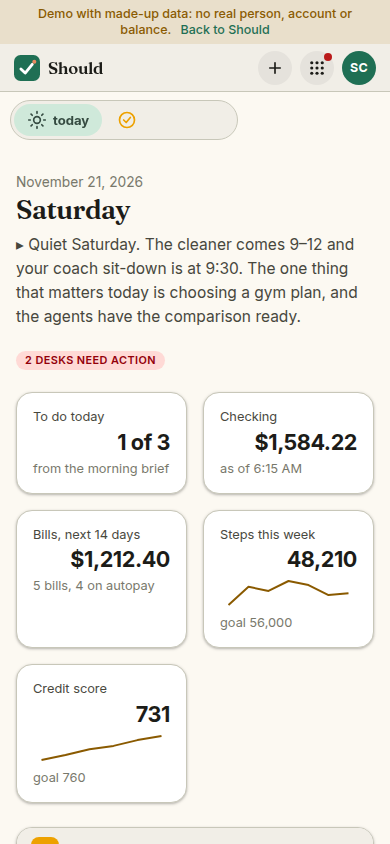

Altura · un retiro para reiniciar tu vida · Costa Rica
Ven por una semana. Configura tu propio Should.
Should es un equipo de agentes de IA que se encarga de la administración de tu vida: correo, calendario, pendientes, cuentas y metas. Altura es la semana en que configuras el tuyo, en tu propia computadora y con tu propia cuenta de Claude, en el Valle Central de Costa Rica, junto a un grupo pequeño de profesionales que estamos invitando de todo el mundo. Regresas a casa con una configuración hecha a la medida de tu vida y un chat del grupo que sigue abierto.
Grupo piloto. Aún no hay fechas ni precio, y anotarte no te compromete a nada.
Lo que te llevas a casa
Lo que Should hace todo el día
Should ya maneja la vida de una persona, todos los días. Resuelve lo pequeño por su cuenta y solo te trae las decisiones que de verdad son tuyas.
Un resumen cada mañana
A las 8 AM, en el chat: las tres cosas que importan hoy, lo que estás esperando y lo que necesita de ti. También por mensaje de texto, cuando agregues tu propio número.
Un equipo de agentes para lo pequeño
Agentes de dinero, casa, salud, trabajo y viajes ordenan el correo, siguen las cuentas, archivan el papeleo y vigilan precios, para que no tengas que acordarte.
Solo te llegan las decisiones reales
Todo lo que gasta dinero, le escribe a alguien o no se puede deshacer espera tu sí. Respondes con 1, 2 o 3.
Un tablero para todo
Cada agente tiene su escritorio en un tablero privado para tu computadora y tu teléfono, junto a tus proyectos y metas.
Empieza por tus valores
Tus valores y metas deciden lo pequeño. Una sesión semanal los mantiene al día y convierte la semana en tres compromisos como máximo.

Una mañana con Should
Respondes con un número y sigues con tu día
Nada que revisar a fondo. Should te trae una cosa a la vez, en el chat, o por mensaje de texto cuando agregues tu propio número.
- Buenos días. Hoy: dentista a las 10:30, llamar a Dana, y la renovación del registro del auto ya está lista. Esperando: al casero por el extractor del baño.
- Una decisión: tu gimnasio se renueva a $39 al mes el día 1. 1 renovar, 2 cambiar al plan de $25, 3 pregúntame el viernes.
- 2
- Listo. El plan de $25 empieza el 1 de diciembre y quedó en tu lista para la revisión del viernes.
Míralo tú mismo
El tablero que tus agentes mantienen al día
Estas imágenes vienen de la demostración pública de Should, que está en inglés. Todos los nombres, cifras y cuentas son inventados.


Dónde está hoy
Claros sobre lo que es
Un prototipo que funciona
Should maneja la vida de quien lo construyó, todos los días. No es una app terminada que se descarga, y cambia cada semana.
Se configura a mano, contigo
En Altura armamos tu copia juntos, paso a paso, con tus cuentas y tus reglas. Habrá algunos detalles por pulir.
Sin resultados prometidos
Puede quitarte mucho trabajo pequeño de encima. No va a arreglar tu dinero, tu salud ni tu carrera por ti, y no prometemos ingresos ni resultados.
Tus datos
Tu vida se queda en tu computadora
Tus datos se quedan contigo
Tu Should corre en tu máquina, con tu propia cuenta de Claude. Altura nunca guarda lo que contiene tu Should. Te ayudamos en tu pantalla cuando lo pidas, y nunca escribimos ni guardamos tus contraseñas.
Tus cuentas, tu acceso
Conectas el correo, el calendario y la app de pendientes que ya usas, y eliges qué puede leer cada agente.
Reglas que escribes tú
Los agentes preguntan antes de dinero, mensajes a otras personas, borrados y configuraciones. Tú decides qué más deben preguntar.
La semana
De lo que te importa a tu propia configuración
Las mañanas son para construir y las tardes para el valle. Es un plan borrador para el piloto, así que los detalles van a cambiar.
Domingo
Llegada
Te recogemos en el aeropuerto de San José, piscina y jardines, cena de bienvenida. Una revisión rápida de la computadora para que todos empiecen listos.
Lunes
Valores y metas
Una sesión sobre lo que te importa: tus valores, lo que nunca pasa sin tu sí, lo que nunca se comparte y cómo se ve una buena semana. Después proteges tus cuentas con un gestor de contraseñas, verificación en dos pasos y un congelamiento de crédito, con nosotros a tu lado.
Martes
Conecta tus cuentas
Claude Code en palabras sencillas, y luego tu correo, calendario y pendientes conectados. Se limpia la bandeja de entrada, todo queda en una sola lista y se programa tu resumen de la mañana.
Miércoles
Descanso
El volcán Poás al amanecer, aguas termales o un día tranquilo. Tu primer resumen de la mañana te espera donde estés.
Jueves
Elige tus agentes
Escoges los agentes que quieres primero, desde dinero y cuentas hasta casa y correo en papel, y escribes las reglas que sigue cada uno.
Viernes
Enséñales tus reglas
Agentes de salud, trabajo y viajes, y luego caminatas uno a uno con el grupo. En la noche de demostraciones cada quien muestra un agente en dos minutos.
Sábado
Llévatelo a casa
Tu primera revisión semanal, en grupo, y un plan de 90 días. Una última revisión de seguridad y el traslado al aeropuerto. El chat del grupo sigue abierto después.
La gente
Conoce a profesionales de todo el mundo
Altura es un grupo pequeño de profesionales, cada uno armando su propio Should, y los estamos invitando de todo el mundo. La semana está pensada para que los conozcas.
Un grupo pequeño, abierto al mundo
Invitamos a personas de distintas áreas y, ojalá, de distintos países y etapas de la vida. Un grupo tan pequeño que para el martes todos se conocen.
Cenas largas e intercambio de problemas
Las noches son para cenas en mesa larga y para intercambiar problemas con gente que los resuelve distinto que tú.
Caminatas uno a uno
Las caminatas del viernes al mediodía te juntan con alguien nuevo, entre los cafetales.
Una red que dura
El chat del grupo sigue abierto después de la semana, así que sigues comparando ideas y configuraciones desde casa.
El lugar
El Valle Central de Costa Rica
Cafetales sobre el valle, días cálidos y noches frescas, cerca del aeropuerto.
- Sobre el nivel del mar
- 950 m
- De día, de diciembre a abril
- 20–28 °C
- Del aeropuerto de San José
- 25 min
- Fácil para llamar a casa
- UTC−6


Las fotos muestran la región, no un lugar reservado.
Qué traer
Tres cosas y tus accesos
Una computadora portátil
Con espacio para instalar Claude Code y un gestor de contraseñas.
Tu propia cuenta de Claude
Pro o Max, que incluyen Claude Code. Es tuya y te la quedas después de la semana.
Tu teléfono
Para los códigos de verificación y para responderle a tu Should desde donde estés.
Accesos a mano
Tus inicios de sesión del correo, el calendario y la app de pendientes, y tu teléfono para los códigos de verificación. Los agentes del banco son opcionales y solo de lectura. Te mandamos una lista corta antes del viaje.
Preguntas
Antes de anotarte
¿Necesito saber programar?
No. Le escribes a Claude en palabras sencillas, y hacemos la configuración contigo, paso a paso.
¿Estoy comprando Should?
No. Should es un prototipo que funciona. En Altura configuras tu propia copia del mismo enfoque en tu computadora y tus cuentas, y nada tuyo corre de nuestro lado.
¿Cuánto cuesta?
Aún no hay fechas ni precio; la lista piloto nos ayuda a definirlos. Tu plan de Claude es aparte y se le paga a Anthropic.
¿Quién más va a estar?
Un grupo pequeño de profesionales de distintas áreas y, ojalá, de distintos países. La lista piloto nos ayuda a formar el grupo, y sabrás quién viene antes de viajar.
Uso ChatGPT. ¿Puedo ir igual?
Should está hecho hoy sobre Claude y Claude Code, así que para la semana necesitas una cuenta Claude Pro o Max.
¿Puedo verlo antes?
Sí. La demostración pública muestra el tablero con datos inventados, y la página de Should explica cómo funciona.
Grupo piloto
Únete a la lista piloto
Estamos planeando un piloto pequeño. Cuéntanos de ti y qué te gustaría que Should te quitara de encima, y con las respuestas definimos fechas y precio. Anotarte no te compromete a nada.
Planeado para el piloto
- Seis noches de hospedajeIncluido
- La mayoría de las comidasIncluido
- Talleres, ayuda con la configuración, paseosIncluido
- Traslados al aeropuertoIncluido
- Vuelos y tu plan de ClaudeNo incluido
Ya estás en la lista
Gracias.
Te escribiremos cuando estén las fechas del piloto.